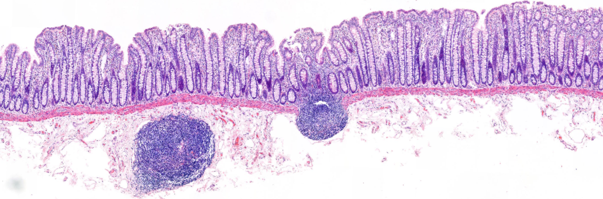

Mucosal Immunology · University of Glasgow
How does inflammation begin in Crohn's disease?
We study the earliest immunological events in Crohn's disease, focusing on the mechanisms that drive inflammation within gut-associated lymphoid tissues.

Research overview
Crohn's disease is a chronic immune-mediated inflammatory bowel disease with a poorly understood pathogenesis. Our work centres on the gut-associated lymphoid tissues (GALT), particularly Peyer's patches and isolated lymphoid follicles, as the sites of disease initiation.
The first signs of Crohn's inflammation in the gut wall are 'red rings' and 'aphthoid' ulcers, which are symptoms of immune responses becoming damaging. We analyse use state-of-the-art immunology techniques to understand the immune processes that drive these early disease processes.
GALT and disease initiation
Characterising the immune microenvironment of Peyer's patches and isolated lymphoid follicles in human Crohn's disease resection tissue.
Mononuclear phagocyte biology
Mapping monocyte/macrophage and dendritic cell subsets in the human intestine.
Host-pathogen interactions
Investigating how the microbiota drives inflammation in genetically predisposed people.
Funding
From Onset to Inflammation: Localising the Pathogenic Mechanisms of Crohn's Disease
Affiliations
School of Infection & Immunity
University of Glasgow
Glasgow, Scotland